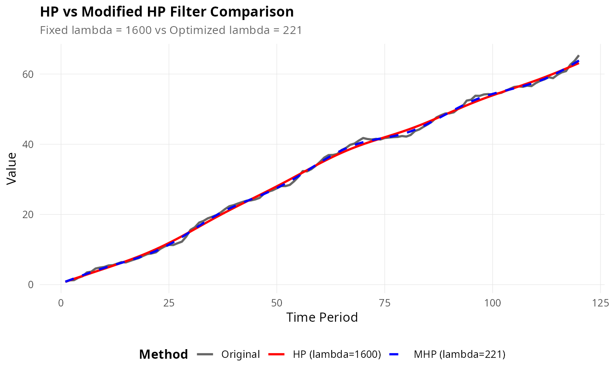

Compare the standard HP filter with the Modified HP filter for a single series. Provides summary statistics for both methods including cycle properties.
Usage
mhp_compare(x, frequency = c("quarterly", "annual"), max_lambda = 100000L)Value
A data.table with comparison statistics for both methods:
- method
"HP" or "Modified HP"
- lambda
Smoothing parameter used
- cycle_sd
Standard deviation of cyclical component
- cycle_mean
Mean of cyclical component
- ar1
First-order autocorrelation of cyclical component
- cycle_range
Range of cyclical component (max - min)
- gcv
GCV value (NA for standard HP)
Details
The comparison includes: 1. Standard HP filter with fixed lambda (1600 for quarterly, 100 for annual) 2. Modified HP filter with GCV-optimized lambda
Statistics calculated on the cyclical component help assess filter performance: - Lower cycle SD suggests smoother trend - AR(1) near 0 suggests successful cycle extraction - Near-zero mean suggests proper centering
Examples
# Example 1: Quarterly GDP-like series
set.seed(789)
n <- 100
gdp <- cumsum(rnorm(n, mean = 0.7, sd = 0.5)) + 2 * cos(2 * pi * (1:n) / 32)
comparison <- mhp_compare(gdp, frequency = "quarterly", max_lambda = 10000)
print(comparison)
#> method lambda cycle_sd cycle_mean ar1 cycle_range gcv
#> <char> <num> <num> <num> <num> <num> <num>
#> 1: HP 1600 0.9492746 2.372129e-12 0.8547305 3.882929 NA
#> 2: Modified HP 206 0.5323633 -3.261835e-13 0.6231910 2.408114 0.552981
# Example 2: Annual series
set.seed(101)
n_annual <- 50
annual_series <- cumsum(rnorm(n_annual, mean = 2.0, sd = 1.0)) +
3 * sin(2 * pi * (1:n_annual) / 10)
annual_comparison <- mhp_compare(annual_series, frequency = "annual", max_lambda = 5000)
print(annual_comparison)
#> method lambda cycle_sd cycle_mean ar1 cycle_range gcv
#> <char> <num> <num> <num> <num> <num> <num>
#> 1: HP 100 2.130999 -2.198952e-13 0.7444730 7.759845 NA
#> 2: Modified HP 956 2.441077 2.926424e-12 0.7834235 9.780873 6.450526
# Example 3: Visual comparison
set.seed(2023)
test_series <- cumsum(rnorm(120, mean = 0.5, sd = 0.4)) +
runif(1, 1, 3) * sin(2 * pi * (1:120) / 30)
comp_result <- mhp_compare(test_series, frequency = "quarterly", max_lambda = 20000)
if (require(ggplot2)) {
# Create visualization
hp_result <- hp_filter(test_series, lambda = 1600, as_dt = FALSE)
mhp_result <- mhp_filter(test_series, max_lambda = 20000, as_dt = FALSE)
plot_comparison(test_series, frequency = "quarterly", max_lambda = 20000)
}
